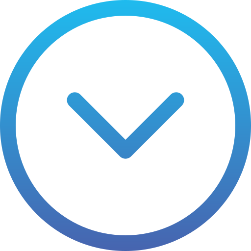

¿Qué es el sistema de acceso CEET 
Es una plataforma web donde las persona que se encuentren registradas podran visualizar sus registros de ingreso y salida, que efectuen de manera fisica en la institucion Centro de Electricidad, Electronica y Telecomunicaciones CEET, asi como tambien las fecha de asistencia en los cuales se presento